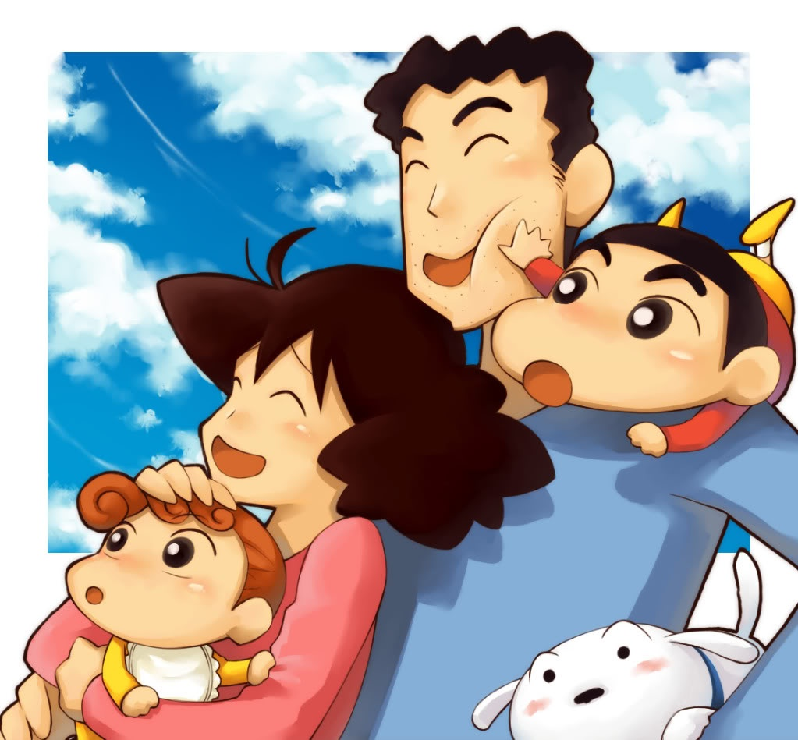
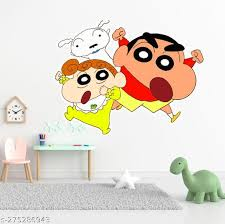
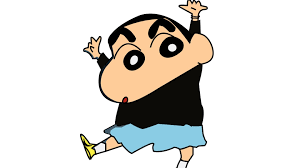
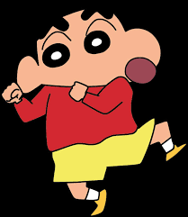
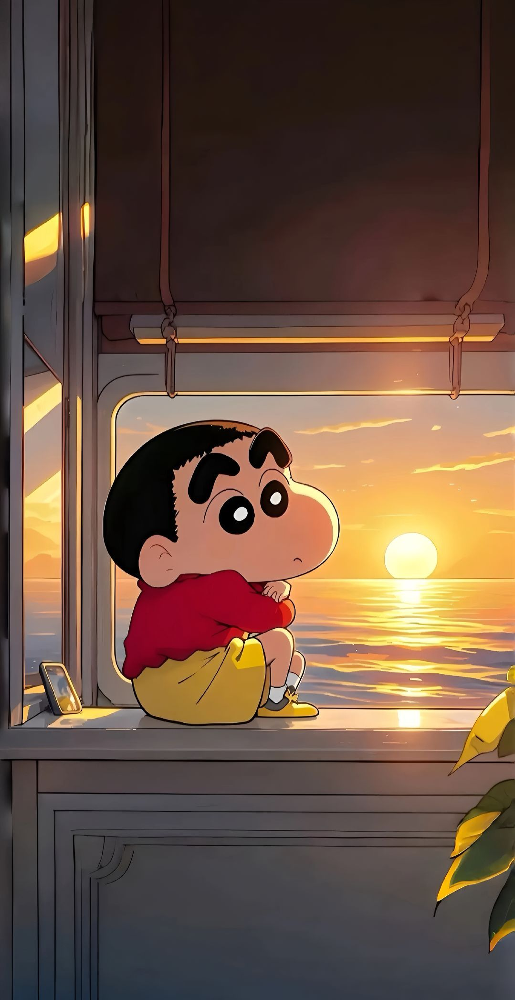
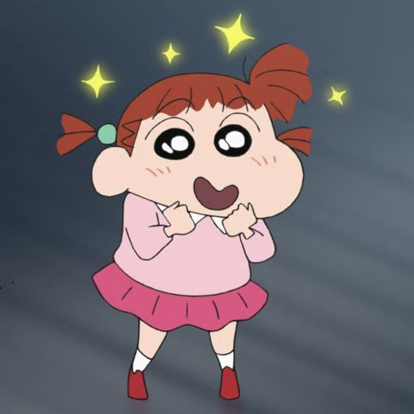
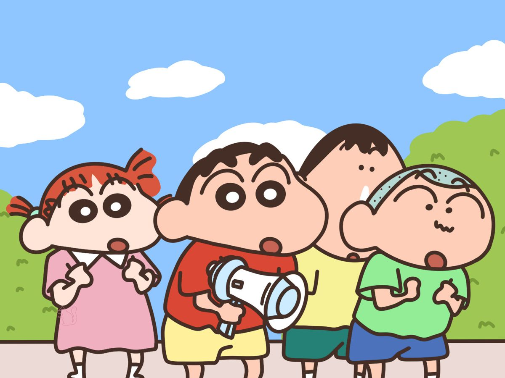
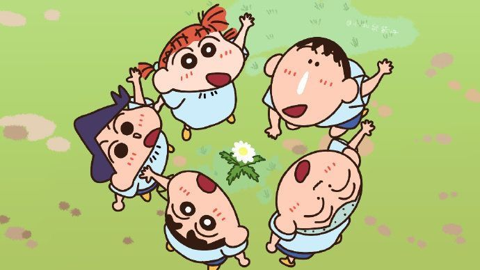

About Sinchan
Shinchan is a naughty 5-year-old kid 😜 who lives in Kasukabe, Japan 🇯🇵.
He always disturbs his mom Misae with silly pranks 😂.
His dog Shiro 🐶 is very loyal and always follows him everywhere.
Shinchan loves dancing half-naked in the house 🕺.
He cares a lot for his sister Himawari 👶 even though he irritates her.
Sometimes, his dad Hiroshi faces funny problems because of Shinchan 🤦♂️.
There are also emotional scenes when the family goes through hard times 😢.
Shinchan supports his friends in every problem 💪.
The show makes us laugh and also touches our heart 💖.
It’s not just comedy – it’s childhood, friendship, and family in one cartoon 🎨👨👩👧👦.







